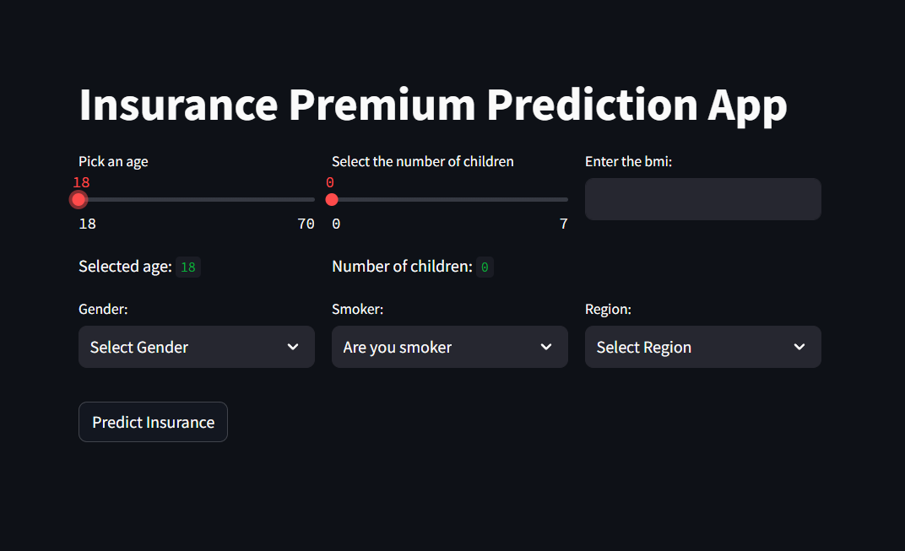
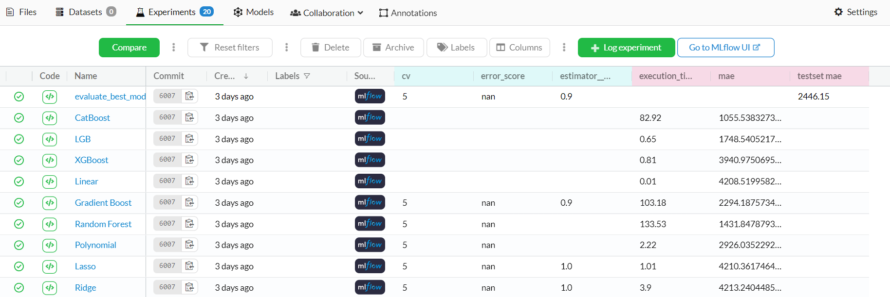

Insurance Premium Prediction Application
Overview
This is a machine learning application designed for predicting insurance premiums. The project leverages a variety of tools and frameworks to streamline data management, experiment tracking, and model deployment.
🛠️ Tools Utilized
- DVC (Data Version Control): Used for managing and versioning data pipeline.
- Git: Version control system for tracking code changes.
- MLflow: Used for tracking the model training and model evaluation.
- GitHub Actions Server: Used for continuous integration and deployment.
- Dagshub: Facilitates MLflow experiment tracking and DVC data pipeline.
🛢️ Machine Learning Pipeline
Data Ingestion 📥
The application ingests insurance premium data from the data/insurance.csv data path and saves it into artifacts/DataIngestionArtifacts.
Data Transformation 🔧
Data undergoes transformation to prepare it for model training. Transformed data and preprocessing artifacts are saved into artifacts/DataTransformationArtifacts. Preprocessors are also stored in models/.
Model Training 🤖
Multiple machine learning models are trained:
Linear Regression, Ridge Regression, Lasso Regression, Polynomial Regression, Random Forest,
Gradient Boosting, XGBoost, LightGBM, Catboost.
The top 4 performing models based on training metrics are selected. Both models and associated metrics are saved into artifacts/ModelTrainerArtifacts. MLflow is used to track model parameters and metrics throughout this process.
Model Evaluation 📊
The best-performing model on test data is selected and saved into artifacts/ModelEvaluationArtifacts and models/. Model evaluation metrics are tracked using MLflow.
Streamlit App Development 💻
A Streamlit application is developed to allow users to input data and receive predictions from the trained model.

Model Deployment 🚀
The model is deployend on the AWS EC2 using Docker and Github Action Server.
📋 Model tracking with MLFlow

🖇️ Data pipeline tracking with DVC


📁 Directory Structure
📂.github/
└── 📂workflows/
└── main.yaml
📂docs/
├── 📂docs/
│ ├── index.md
│ └── getting-started.md
├── mkdocs.yml
└── README.md
📂src/
├── init.py
├── 📂components/
│ ├── init.py
│ ├── data_ingestion.py
│ ├── data_transformation.py
│ ├── model_trainer.py
│ └── model_evaluation.py
├── 📂constants/
│ └── init.py
├── 📂entity/
│ ├── init.py
│ ├── config_entity.py
│ └── artifact_entity.py
├── 📂pipeline/
│ ├── init.py
│ ├── training_pipeline.py
│ └── prediction_pipeline.py
├── 📂utils/
│ ├── init.py
│ └── utils.py
├── 📂logger/
│ └── init.py
└── 📂exception/
└── init.py
📂data/
└── insurance.csv
📂experiment/
└── experiments.ipynb
requirements.txt
requirements_app.txt
setup.py
app.py
main.py
README.md
implement.md
.gitignore
template.py
prediction.py
init_setup.ps1
dvc.yaml
Dockerfile
demo.py
config.json
.dockerignore
.dvcignore
📈 Models
- Linear Regression
- Ridge Regression
- Lasso Regression
- Polynomial Regression
- Random Forest
- Gradient Boosting
- XGBoost
- LightGBM
- Catboost
🖥️ Installation
🛠️ Requirements:
- Python 3.10
- mkdocs
- dvc
- numpy
- pandas
- colorama
- mlflow==2.2.2
- dagshub
- scikit-learn
- xgboost
- lightgbm
- catboost
- streamlit
⚙️ Setup
To reproduce the model and run the application:
-
Clone the repository:
git clone <repository_url>
cd <repository_name> -
Set up the virtual environment and install the requirements:
./init_setup.ps1 -
Execute the whole pipeline:
python main.py
Now run the streamlit app.
🎯 Inference demo
-
Run the Streamlit app:
streamlit run app.py2. Enter the input values and get prediction
Contributors 👨🏼💻
- Ravi Kumar